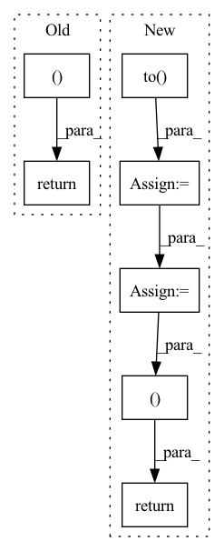

Pattern ID :1515

Before Change
mel_loss + kl_loss + postnet_loss + duration_loss
)
return (
total_loss,
mel_loss, // L_VG
kl_loss, // L_KL
postnet_loss, // L_PN
duration_loss, // L_dur
)
After Change
z, logdet = postnet_outputs
postnet_loss = self.mle_loss(z, logdet, mel_masks.unsqueeze(1))
helper_loss = attn_loss = ctc_loss = torch.zeros(1).to(mel_targets.device)
if self.helper_type == "dga":
for alignment in alignments[1]: // DGA should be applied on attention without mapping mask
attn_loss += self.guided_attn_loss(alignment, src_lens, mel_lens)
// attn_loss = self.guided_attn_loss(alignments[1][0], src_lens, mel_lens)
helper_loss = self.guided_attn_weight * attn_loss
elif self.helper_type == "ctc":
for alignment_logprob in alignment_logprobs:
ctc_loss += self.sum_loss(alignment_logprob, src_lens, mel_lens)
ctc_loss = ctc_loss.mean()
helper_loss = (self.ctc_weight_start if step <= self.ctc_step else self.ctc_weight_end) * ctc_loss
total_loss = (
mel_loss + kl_loss + postnet_loss + duration_loss + helper_loss
)
return (
total_loss,
mel_loss, // L_VG
kl_loss, // L_KL
postnet_loss, // L_PN
duration_loss, // L_dur
helper_loss,
)
In pattern: SUPERPATTERN
Frequency: 4
Non-data size: 7
Instances
Fragment ID: 4406019
Project Name: keonlee9420/portaspeech
Commit Name: 814cdda1ebf7dc626708db2bcf20fdb9207f4345
Time: 2022-02-13
Author: keonlee9420@gmail.com
File Name: model/loss.py
M Class Name: PortaSpeechLoss
N Class Name: PortaSpeechLoss
M Method Name: forward(4)
N Method Name: forward(3)
M Parent Class: nn.Module
N Parent Class: nn.Module
M File Name: model/loss.py
N File Name: model/loss.py
M Start Line: 80
M End Line: 100
N Start Line: 59
N End Line: 127
'>
Before Change
// reg_heads shape:[[B, 80, 80, 4],[B, 40, 40, 4],[B, 20, 20, 4],[B, 10, 10, 4],[B, 5, 5, 4]]
// center_heads shape:[[B, 80, 80, 1],[B, 40, 40, 1],[B, 20, 20, 1],[B, 10, 10, 1],[B, 5, 5, 1]]
return cls_heads, reg_heads, center_heads
def _fcos(arch, pretrained, progress, **kwargs):
model = FCOS(arch, **kwargs)
After Change
del features
self.fpn_feature_sizes = torch.tensor(
self.fpn_feature_sizes).to(device)
batch_positions = self.positions(self.batch_size,
self.fpn_feature_sizes)
// if input size:[B,3,640,640]
// features shape:[[B, 256, 80, 80],[B, 256, 40, 40],[B, 256, 20, 20],[B, 256, 10, 10],[B, 256, 5, 5]]
// cls_heads shape:[[B, 80, 80, 80],[B, 40, 40, 80],[B, 20, 20, 80],[B, 10, 10, 80],[B, 5, 5, 80]]
// reg_heads shape:[[B, 80, 80, 4],[B, 40, 40, 4],[B, 20, 20, 4],[B, 10, 10, 4],[B, 5, 5, 4]]
// center_heads shape:[[B, 80, 80, 1],[B, 40, 40, 1],[B, 20, 20, 1],[B, 10, 10, 1],[B, 5, 5, 1]]
// batch_positions shape:[[B, 80, 80, 2],[B, 40, 40, 2],[B, 20, 20, 2],[B, 10, 10, 2],[B, 5, 5, 2]]
return cls_heads, reg_heads, center_heads, batch_positions
def _fcos(arch, pretrained, progress, **kwargs):
model = FCOS(arch, **kwargs)
'>
Fragment ID: 4406017
Project Name: zgcr/pytorch-imagenet-cifar-coco-voc-training
Commit Name: d271077f312fa0d2bf7456c3b5edc63e49aa3a39
Time: 2020-07-19
Author: zgcr@mail.ustc.edu.cn
File Name: public/detection/models/fcos.py
M Class Name: FCOS
N Class Name: FCOS
M Method Name: forward(2)
N Method Name: forward(2)
M Parent Class: nn.Module
N Parent Class: nn.Module
M File Name: public/detection/models/fcos.py
N File Name: public/detection/models/fcos.py
M Start Line: 109
M End Line: 109
N Start Line: 82
N End Line: 125
'>
Before Change
raise RuntimeError("Unknown value for attention norm type")
context = torch.bmm(alignment.unsqueeze(1), inputs)
context = context.squeeze(1)
return context, alignment
class Postnet(nn.Module):
def __init__(self, mel_dim, num_convs=5):
After Change
raise RuntimeError("Unknown value for attention norm type")
if self.forward_attn:
// forward attention
prev_alpha = F.pad(self.alpha[:, :-1].clone(), (1, 0, 0, 0)).to(inputs.device)
self.alpha = (((1-self.u) * self.alpha.clone().to(inputs.device) + self.u * prev_alpha) + 1e-7) * alignment
alpha_norm = self.alpha / self.alpha.sum(dim=1).unsqueeze(1)
// compute context
context = torch.bmm(alpha_norm.unsqueeze(1), inputs)
context = context.squeeze(1)
return context, alpha_norm, alignment
else:
context = torch.bmm(alignment.unsqueeze(1), inputs)
context = context.squeeze(1)
return context, alignment, alignment
'>
Fragment ID: 4405959
Project Name: coqui-ai/tts
Commit Name: 961af0f5cdefbb5f267671f6847cf05659962d6c
Time: 2019-04-05
Author: egolge@mozilla.com
File Name: layers/tacotron2.py
M Class Name: Attention
N Class Name: Attention
M Method Name: forward(6)
N Method Name: forward(6)
M Parent Class: nn.Module
N Parent Class: nn.Module
M File Name: layers/tacotron2.py
N File Name: layers/tacotron2.py
M Start Line: 173
M End Line: 175
N Start Line: 193
N End Line: 208
'>
Before Change
return loss, None
else:
return None, self.decode(self_attended_context, final_context, context_padding, final_question, question_padding,
context_limited, question_limited,
decoder_vocab, rnn_state=context_rnn_state).data
def probs(self, outputs, vocab_pointer_switches, context_question_switches,
context_attention, question_attention,
context_indices, question_indices,
After Change
decoder_wrapper = self.decoder_wrapper(self_attended_context, final_context, context_padding, final_question, question_padding,
context_limited, question_limited, decoder_vocab, rnn_state=context_rnn_state)
else:
current_token_id = current_token_id.cpu().apply_(self.map_to_full).to(current_token_id.device)
// return (next_token_logits, past) where `past` includes all the states needed to continue generation
logits = decoder_wrapper.next_token_probs(current_token_id)
// print("logits", logits.shape)
return logits, decoder_wrapper
def probs(self, outputs, vocab_pointer_switches, context_question_switches,
context_attention, question_attention,
context_indices, question_indices,
'>
Fragment ID: 4405980
Project Name: stanford-oval/genienlp
Commit Name: 8750a12fd1be465524e5aa235e507dd421607034
Time: 2020-07-24
Author: s.j.semnani@gmail.com
File Name: genienlp/models/mqan_decoder.py
M Class Name: MQANDecoder
N Class Name: MQANDecoder
M Method Name: forward(10)
N Method Name: forward(8)
M Parent Class: nn.Module
N Parent Class: nn.Module
M File Name: genienlp/models/mqan_decoder.py
N File Name: genienlp/models/mqan_decoder.py
M Start Line: 86
M End Line: 144
N Start Line: 82
N End Line: 149